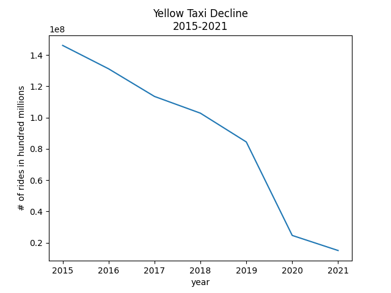

Uber has driven NYC's once solid yellow taxi business into brankruptcy. For this project, I took a deep-dive into their
ridership data using data science, particularly Pandas, Pandasql, and MatPlotLib, to prove that Uber controls the taxi market. I also looked into Uber's lobbying tactics.
The results can be found on `The Analysis` page and are worth the read. Codes and explanations can be found on the `Data, Techniques & Codes`
page. All resources are listed on the `Resources` page.
Enjoy.
Uber is the top-performing taxi company in NYC with a total of 753,714,454 rides from 2015 to November 2021.
NYC's Yellow Taxis have been losing millions of rides since January 2015 until April 2021. The table below shows the difference in ridership between years and most of it is in the negative. For example: the largest difference in ridership between 2015 and 2016 was in January of 2016 with a drop of 1,842,128 rides; the largest drop in ridership between 2016 and 2017 was in February of 2017 with a loss of 2,213,224 rides. The largest drop in ridership between 2017 and 2018 was in December 2018 etc. Overall, the largest yearly drop in ridership is between 2019 and 2020 with a loss of 59,750,520 rides.
| 2015 | 2016 | 2017 | 2018 | 2019 | 2020 | 2021 | |
|---|---|---|---|---|---|---|---|
| 0 | NaN | -1842128 | -1196734 | -950250 | -1092082 | -1262784 | -5035243 |
| 1 | NaN | -1068472 | -2213224 | -676749 | -1472701 | -720021 | -4927646 |
| 2 | NaN | -1140657 | -1916324 | -864252 | -1597831 | -4825253 | -1082140 |
| 3 | NaN | -1137451 | -1888150 | -740673 | -1872376 | -7195146 | 1933194 |
| 4 | NaN |
-1321409 | -1734729 | -878061 | -1658802 | -7216890 | 2158738 |
| 5 | NaN |
-1189465 | -1478477 | -943162 | -1772807 | -6391264 | 2284504 |
| 6 | NaN |
-1268703 | -1705594 | -738738 | -1539329 | -5510007 | 2021103 |
| 7 | NaN |
-1188041 | -1520110 | -573019 | -1775777 | -5066073 | NaN |
| 8 | NaN |
-1109045 | -1170559 | -905326 | -1472345 | -5226776 | NaN |
| 9 | NaN |
-1460862 | -1085811 | -947710 | -1607214 | -5532760 | NaN |
| 10 | NaN |
-1210548 | -817325 | -1139639 | -1267053 | -5369126 | NaN |
| 11 | NaN |
-1011165 | -941132 | -1335045 | -1276914 | -5434420 | NaN |
To drive home the point, please see the graph below which shows the Yellow Taxi's decline in rides.

According to the 2015-present data, Uber outperforms their competition in the millions and in doing so, they are becomming a monopoly.
Since 2015, Uber has completed an estimated 753,714,454 out of a total of 1,831,217,600 rides, which is 41% of all total rides. In other words, today Uber controls 41% of the market.
In 2020, there was a decline in Uber's ridership and overall taxi rides in 2020 due to the pandemic. However,
Uber still completed 90 million rides in NYC compared to the 1.5 million Yellow Taxi rides. All other taxi companies also pale in comparison.
The table below provides the number of yearly rides for the top 4 taxi companies in NYC.
| Base Name | 2015 | 2016 | 2017 | 2018 | 2019 | 2020 | 2021 | Total |
|---|---|---|---|---|---|---|---|---|
| Total | 207235764 | 259460434 | 302756131 | 363228443 | 363977910 | 182817109 | 151741809 | 1831217600 |
| Uber | 36275937 | 70067854 | 109642713 | 163103265 | 181025304 | 103184679 | 90414702 | 753714454 |
| Yellow Taxi | 146113001 | 131165055 | 113496886 | 102804262 | 84399031 | 24648511 | 15000707 | 617627453 |
| Lyft | 2615481 | 11415958 | 26361098 | 44823801 | 57891012 | 37252636 | 34669137 | 215029123 |
| Via | 1767709 | 6085133 | 10324271 |
11345582 | 11279889 | 2872556 | 862418 | 44537558 |
The graph below shows Uber's performance against NYC's top 4 taxi companies.
The graph below shows Uber's performance against NYC's Yellow Taxi company.
A taxi medallion is a permit that allows a taxicab driver to operate. Since the creation of rideshare apps in 2011, NYC's taxi medallion's value has plummeted.
In 2014, yellow cab medallions were selling for $1 million because NYC's government inflated the medallion's value in an effort to increase revenue.
However, they also capped the number of yellow cabs available to about 13,500. Rideshare vehicles had
no such limits and as a result, rideshare apps - particularly Uber - flooded the market, and virtually overnight, the taxi medallion became worthless.
At the height of this madness, the average cab driver owed $600,000 in medallion debt, an impossible sum to pay back because they work in a dying industry.
As of November 2021, the New York Taxi Worker's Association announced a deal with Mayor Bill de Blasio for a $65 million debt relief program where a driver's debt
is capped to $145,000 with maximum monthly payments of $800, and the restitution of all foreclosed medallions to their owners.
Rideshare apps - particularly Uber - are a problem and they should be capped.
For more information, please see Documented's article on the Yellow Taxi's brankruptcy.
Investopedia recently investigated Uber's prices and produced the table below. It is difficult to understand
how these pricing structures work in real life but the overall takeaway is that taxis are cheaper in NYC when traffic
is flowing under 20 miles per hour whereas Uber is cheaper in other cases unless it is charging high-demand fares.
A few other key takeaways include the following:
| TYPE | DESCRIPTION | BASE FARE | FINANCIAL BREAKDOWN | MINIMUM FARE |
|---|---|---|---|---|
| UberX | regular/professional drivers; regular cars | $2.55 | $0.35 per minute + $1.75 per mile | $7.00 |
| uberXL | regular/professional drivers; regular SUVs | $3.85 | $0.50 per minute + $2.85 per mile | $10.50 |
| UberBLACK | professional drivers; upscale cars | $7.00 | $0.65 per minute + $3.75 per mile | $15.00 |
| UberSUV | professional drivers; upscale SUVs | $14.00 | $0.65 per minute + $3.75 per mile | $25.00 |
Uber has over 250 lobbyists and 49 lobbying firms in the United Sates alone. Their lobbying force is bigger
than Google's, Facebook's, and Walmart's. So what exactly does Uber do with all of these lobbyists? They
are attempting to maximize profits by changing what is expected of transportation divers. For example: Uber currently under-insures
their drivers, they've reduced their rate of international taxes, and classify their
employees as independent contractors to avoid providing benefits and/or a union contract. Please also note that Uber's "low prices"
are a result of tax avoidance and bad labor practices.
Recently, Uber launched a $10 million dollar campaign against Mayor Bill de Blasio who proposed capping the number of Uber
vehicles in an effort to reduce congestion. The outcome of that battle was that City Hall gets additional data about Uber's
trips.
The message that Uber is sending is clear: they are a monopoly that has forced the Mayor of NYC to back down. Uber is a problem and they must be capped.
For more information, please see this article from Jobs with Justice.
Using NYC Open Data's uber_Data.csv file and Pandas, it was found that Uber had a total of 753,714,454 rides from 2015 to present date. To obtain this number, the CSV file was loaded into a Pandas dataframe and the numbers that were in the `Total Dispatched Trips` column were converted to integers and summed.
df = pd.read_csv('uber_Data.csv')
df['Total Dispatched Trips'] = df['Total Dispatched Trips'].str.replace(",","").astype(int)
total = df['Total Dispatched Trips'].sum()
print(total)
79 CSV files were used to analyze the Yellow Taxi's ridership. The analysis ranged from years 2015 to 2021: there are 12 monthly files for years 2015-2020 and 7 files for 2021.
That monthly raw data can be found here. A list of the names the CSV files used is provided in the table below.
| 2015 | 2016 | 2017 | 2018 | 2019 | 2020 | 2021 | |
|---|---|---|---|---|---|---|---|
| JAN | yellow_tripdata_2015-01.csv | yellow_tripdata_2016-01.csv | yellow_tripdata_2017-01.csv | yellow_tripdata_2018-01.csv | yellow_tripdata_2019-01.csv | yellow_tripdata_2020-01.csv | yellow_tripdata_2021-01.csv |
| FEB | yellow_tripdata_2015-02.csv | yellow_tripdata_2016-02.csv | yellow_tripdata_2017-02.csv | yellow_tripdata_2018-02.csv | yellow_tripdata_2019-02.csv | yellow_tripdata_2020-02.csv | yellow_tripdata_2021-02.csv |
| MAR | yellow_tripdata_2015-03.csv | yellow_tripdata_2016-03.csv | yellow_tripdata_2017-03.csv | yellow_tripdata_2018-03.csv | yellow_tripdata_2019-03.csv | yellow_tripdata_2020-03.csv | yellow_tripdata_2021-03.csv |
| APR | yellow_tripdata_2015-04.csv | yellow_tripdata_2016-04.csv | yellow_tripdata_2017-04.csv | yellow_tripdata_2018-04.csv | yellow_tripdata_2019-04.csv | yellow_tripdata_2020-04.csv | yellow_tripdata_2021-04.csv |
| MAY | yellow_tripdata_2015-05.csv | yellow_tripdata_2016-05.csv | yellow_tripdata_2017-05.csv | yellow_tripdata_2018-05.csv | yellow_tripdata_2019-05.csv | yellow_tripdata_2020-05.csv | yellow_tripdata_2021-05.csv |
| JUN | yellow_tripdata_2015-06.csv | yellow_tripdata_2016-06.csv | yellow_tripdata_2017-06.csv | yellow_tripdata_2018-06.csv | yellow_tripdata_2019-06.csv | yellow_tripdata_2020-06.csv | yellow_tripdata_2021-06.csv |
| JUL | yellow_tripdata_2015-07.csv | yellow_tripdata_2016-07.csv | yellow_tripdata_2017-07.csv | yellow_tripdata_2018-07.csv | yellow_tripdata_2019-07.csv | yellow_tripdata_2020-07.csv | yellow_tripdata_2021-07.csv |
| AUG | yellow_tripdata_2015-08.csv | yellow_tripdata_2016-08.csv | yellow_tripdata_2017-08.csv | yellow_tripdata_2018-08.csv | yellow_tripdata_2019-08.csv | yellow_tripdata_2020-08.csv | |
| SEPT | yellow_tripdata_2015-09.csv | yellow_tripdata_2016-09.csv | yellow_tripdata_2017-09.csv | yellow_tripdata_2018-09.csv | yellow_tripdata_2019-09.csv | yellow_tripdata_2020-09.csv | |
| OCT | yellow_tripdata_2015-10.csv | yellow_tripdata_2016-10.csv | yellow_tripdata_2017-10.csv | yellow_tripdata_2018-10.csv | yellow_tripdata_2019-10.csv | yellow_tripdata_2020-10.csv | |
| NOV | yellow_tripdata_2015-11.csv | yellow_tripdata_2016-11.csv | yellow_tripdata_2017-11.csv | yellow_tripdata_2018-11.csv | yellow_tripdata_2019-11.csv | yellow_tripdata_2020-11.csv | |
| DEC | yellow_tripdata_2015-12.csv | yellow_tripdata_2016-12.csv | yellow_tripdata_2017-12.csv | yellow_tripdata_2018-12.csv | yellow_tripdata_2019-12.csv | yellow_tripdata_2020-12.csv |
import pandas as pd
#Total number of Jan 2015 yellow-taxi trips.
jan2015 = pd.read_csv('yellow_tripdata_2015-01.csv',low_memory=False)
trips_01_2015 = len(jan2015)+1
##print(trips_01_2015)
#Total number of Feb 2015 yellow-taxi trips.
feb2015 = pd.read_csv('yellow_tripdata_2015-02.csv',low_memory=False)
trips_02_2015 = len(feb2015)+1
##print(trips_02_2015)
#Total number of March 2015 yellow-taxi trips.
mar2015 = pd.read_csv('yellow_tripdata_2015-03.csv',low_memory=False)
trips_03_2015 = len(mar2015)+1
##print(trips_03_2015)
#Total number of April 2015 yellow-taxi trips.
apr2015 = pd.read_csv('yellow_tripdata_2015-04.csv',low_memory=False)
trips_04_2015 = len(apr2015)+1
##print(trips_04_2015)
#Total number of May 2015 yellow-taxi trips.
may2015 = pd.read_csv('yellow_tripdata_2015-05.csv',low_memory=False)
trips_05_2015 = len(may2015)+1
##print(trips_05_2015)
#Total number of June 2015 yellow-taxi trips.
jun2015 = pd.read_csv('yellow_tripdata_2015-06.csv',low_memory=False)
trips_06_2015 = len(jun2015)+1
##print(trips_06_2015)
#Total number of July 2015 yellow-taxi trips.
july2015 = pd.read_csv('yellow_tripdata_2015-07.csv',low_memory=False)
trips_07_2015 = len(july2015)+1
##print(trips_07_2015)
#Total number of August 2015 yellow-taxi trips.
aug2015 = pd.read_csv('yellow_tripdata_2015-08.csv',low_memory=False)
trips_08_2015 = len(aug2015)+1
##print(trips_08_2015)
#Total number of September 2015 yellow-taxi trips.
sept2015 = pd.read_csv('yellow_tripdata_2015-09.csv',low_memory=False)
trips_09_2015 = len(sept2015)+1
##print(trips_09_2015)
#Total number of October 2015 yellow-taxi trips.
oct2015 = pd.read_csv('yellow_tripdata_2015-10.csv',low_memory=False)
trips_10_2015 = len(oct2015)+1
##print(trips_10_2015)
#Total number of November 2015 yellow-taxi trips.
nov2015 = pd.read_csv('yellow_tripdata_2015-11.csv',low_memory=False)
trips_11_2015 = len(nov2015)+1
##print(trips_11_2015)
#Total number of December 2015 yellow-taxi trips.
dec2015 = pd.read_csv('yellow_tripdata_2015-12.csv',low_memory=False)
trips_12_2015 = len(dec2015)+1
##print(trips_12_2015)
list_2015 = [trips_01_2015,trips_02_2015,trips_03_2015,trips_04_2015,trips_05_2015,trips_06_2015,
trips_07_2015,trips_08_2015,trips_09_2015,trips_10_2015,trips_11_2015,trips_12_2015]
df2015 = pd.DataFrame(list_2015, columns = ['2015'])
df2015.to_csv('yellow-taxi-2015.csv', index=False)
Using the code above, the Yellow Taxi's monthly raw data from 2015 to present date was summed and compiled into yearly spreadsheets, which were then summed into one large file. Then, each yearly spreadsheet was read into its own dataframe. Those dataframes were concatentated into 1 dataframe that shows the monthly rides for each year. The difference between the months of each year (also the difference between the columns) was calculated using diff(axis=1). The yearly sum was also calculated and exported to the 'yellow-taxi-2015.csv' file. Lastly, a graph showing the Yellow Taxi's ridership was generated using MatPlotLib.
import matplotlib.pyplot as plt
import pandas as pd
#Read in each CSV file compiled from monthly raw data.
data1 = pd.read_csv('yellow-taxi-2015.csv')
data2 = pd.read_csv('yellow-taxi-2016.csv')
data3 = pd.read_csv('yellow-taxi-2017.csv')
data4 = pd.read_csv('yellow-taxi-2018.csv')
data5 = pd.read_csv('yellow-taxi-2019.csv')
data6 = pd.read_csv('yellow-taxi-2020.csv')
data7 = pd.read_csv('yellow-taxi-2021.csv')
#Concatenate the dataframes.
frames = [data1, data2, data3, data4, data5, data6, data7]
df = pd.concat(frames, axis = 1)
#Find the difference in trips between each year.
print(df.diff(axis = 1))
print(df.sum().diff())
#Prepare file to merge.
df = df.fillna(0)
result = df.sum(axis=0)
result.to_csv('yellow_taxidata.csv', index=True, index_label='Year', header=['Total Dispatched Trips'])
ax = result.plot(kind='line', title='Yellow Taxi Decline\n2015-2021')
ax.set(xlabel='year', ylabel='# of rides in hundred millions')
fig2 = plt.gcf()
fig2.savefig('yellow_taxidecline.png')
plt.show()
| 2015 | 2016 | 2017 | 2018 | 2019 | 2020 | 2021 | |
|---|---|---|---|---|---|---|---|
| 0 | NaN | -1842128 | -1196734 | -950250 | -1092082 | -1262784 | -5035243 |
| 1 | NaN | -1068472 | -2213224 | -676749 | -1472701 | -720021 | -4927646 |
| 2 | NaN | -1140657 | -1916324 | -864252 | -1597831 | -4825253 | -1082140 |
| 3 | NaN | -1137451 | -1888150 | -740673 | -1872376 | -7195146 | 1933194 |
| 4 | NaN |
-1321409 | -1734729 | -878061 | -1658802 | -7216890 | 2158738 |
| 5 | NaN |
-1189465 | -1478477 | -943162 | -1772807 | -6391264 | 2284504 |
| 6 | NaN |
-1268703 | -1705594 | -738738 | -1539329 | -5510007 | 2021103 |
| 7 | NaN |
-1188041 | -1520110 | -573019 | -1775777 | -5066073 | NaN |
| 8 | NaN |
-1109045 | -1170559 | -905326 | -1472345 | -5226776 | NaN |
| 9 | NaN |
-1460862 | -1085811 | -947710 | -1607214 | -5532760 | NaN |
| 10 | NaN |
-1210548 | -817325 | -1139639 | -1267053 | -5369126 | NaN |
| 11 | NaN |
-1011165 | -941132 | -1335045 | -1276914 | -5434420 | NaN |
A more comprehensive analysis was done using the
FHV_Base_Aggregate_Report.csv
file, which is a tally of all non-yellow-cab rides in NYC between 2015 and 2021, and the
yellow_taxidata.csv
file, which I produced from the Yellow Taxi's raw monthly data and the codes above.
These files were analyzed to produce a pivot table
and the graphs below (Uber vs NYC Rides and Uber vs Yellow Taxi Rides).
Regarding technique, the FHV_Base_Aggregate_Report.csv
and the yellow_taxidata.csv files were read into individual Pandas dataframes.
Then, their columns and data were cleaned and organized using Pandas and Pandasql. The dataframes were concatenated into 1 dataframe, which was pivoted to generate
a table with each year in its own column and each company in its own row. Those results can be found in the
aggregate_analysis.csv/pivot table file.
Lastly, this data was filtered and transposed using Pandas and graphed using MatPlotLib.
import matplotlib.pyplot as plt
import pandas as pd
import pandasql as psql
#Read the CSV files into a dataframe.
df1 = pd.read_csv('FHV_Base_Aggregate_Report.csv')
df2 = pd.read_csv('yellow_taxidata.csv')
"""
Clean the data.
1. Change the case for the `Base Name` column.
2. Convert each value in the `Total Dispatched Trips` column to integers.
3. Add the `Base Name` column to the second data frame.
4. Reindex the second dataframe to match the first.
"""
df1['Base Name']= df1['Base Name'].str.upper().str.title()
df1['Total Dispatched Trips'] = df1['Total Dispatched Trips'].str.replace(",","").astype(int)
df2['Base Name'] = 'Yellow Taxi'
df2 = df2.reindex(columns=['Base Name', 'Year', 'Total Dispatched Trips'])
#Organize/select the data from the first dataframe.
name_year_trips = """
SELECT DISTINCT `BASE NAME`, YEAR, SUM(`TOTAL DISPATCHED TRIPS`) AS `Total Dispatched Trips`
FROM df1
GROUP BY `BASE NAME`, YEAR
"""
query = psql.sqldf(name_year_trips)
#Join the data from the two dataframes.
frames = [query, df2]
concat = pd.concat(frames, ignore_index=True)
#Create the pivot table.
pivot = pd.pivot_table(concat, index='Base Name',
columns='Year',
values='Total Dispatched Trips',
aggfunc='sum',
fill_value=0,
margins=True,
margins_name='Total').sort_values('Total',
ascending=False)
#Save this data to a CSV file for later use.
pivot.to_csv('aggregate_analysis.csv')
#Working with the same pivot table, view the top 5 companies and drop the totals row and column.
pivot = pivot.drop(columns='Total')
pivot = pivot.drop('Total')
top_cabs = pivot.head(5)
#Transpose the rows and columns to arrange the data in such a way that it can be graphed.
top_cabs_transposed = top_cabs.T
#Graph, save, and show the data.
ax = top_cabs_transposed.plot(kind='line', title='Uber vs NYC Rides\n2015-2021')
ax.set(xlabel='year', ylabel='# of rides in hundred millions')
fig = plt.gcf()
fig.savefig('ubervsnyc.png')
plt.show()
#Pulling only Uber's and Yellow Taxi's data using the methods above.
top_cabs2 = pivot.head(2)
top_cabs_transposed2 = top_cabs2.T
bx = top_cabs_transposed2.plot(kind='line', title='Uber vs Yellow Taxi Rides\n2015-2021')
bx.set(xlabel='year', ylabel='# of rides in hundred millions')
fig = plt.gcf()
fig.savefig('ubervsyt.png')
plt.show()
Thank you to NYC Open Data for their content.
Thank you to Investopedia for their fare breakdown.
Thank you to Documented for investigating NYC's Yellow Taxi brankruptcy.
Thank you to this shareholder for demanding transparency re: Uber's lobbying.
Thank you to the New York Post and The New York Times for reporting on Uber's lobbying.
Thank you to Jobs with Justice for calling out Uber's lobbying and bullying tactics.